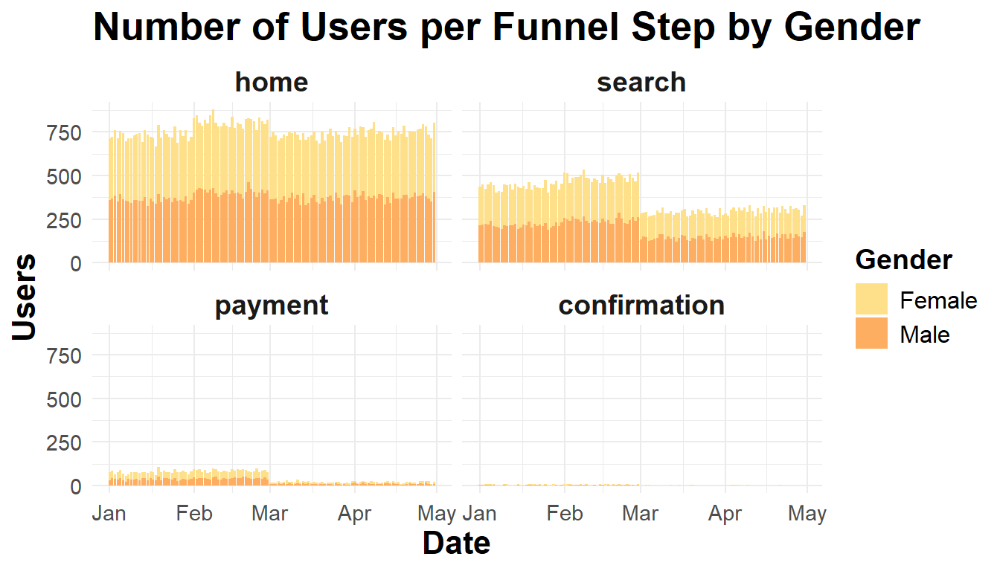
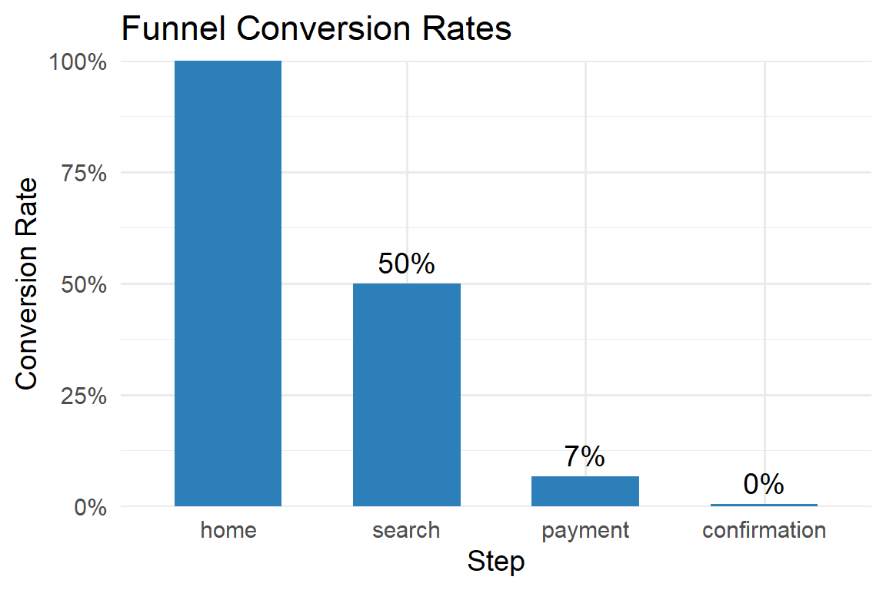
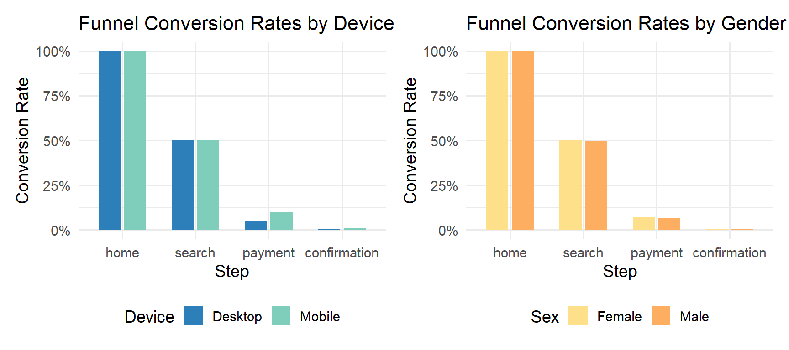
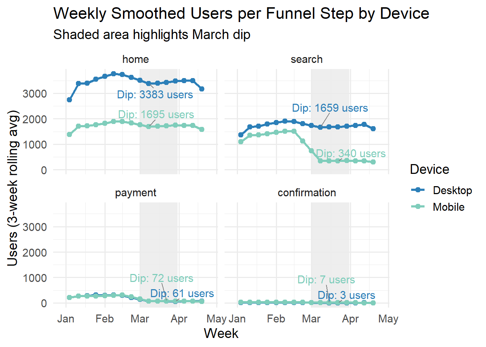

This analysis examines how users progress through an e-commerce funnel—from landing on the Home page to completing a purchase. The dataset contains records of one-time users visiting funnel steps: Home, Search, Payment, and Confirmation.
Using funnel metrics, step-to-step conversions, and time-based trends, I identified Mobile Search as a primary friction point and highlighted targeted UX actions to improve conversions.
Analysis Goal
The goal of this analysis is to identify where users drop off in an e-commerce funnel and determine whether drop-offs differ by device, gender, or time. Insights from this analysis help prioritize UX improvements and testing for the most impactful funnel steps.
Dataset Overview
The data include the following tables:
user_table: Contains user IDs, dates, device type, and gender.
home_page, search_page, payment_page, confirmation_page: Track whether a user visited that step in the funnel.
Analytical assumptions & limitations:
Users are assumed to move sequentially through the funnel (Home → Search → Payment → Confirmation)
Page visits are treated as proxies for intent to progress
Drop-offs may reflect UX friction, technical issues, or alternative navigation paths
All users are one-time visitors; retention and repeat behavior cannot be evaluated
The tables were merged into a single dataset tracking each user’s journey through the funnel, enabling comprehensive funnel analysis.
Code
# Load librarieslibrary(tidyverse)library(lubridate)library(ggrepel)library(scales)library(zoo)# Device colorsdevice_colors <-c("Desktop"="#2c7fb8", "Mobile"="#7fcdbb")# Gender colorsgender_colors <-c("Male"="#fdae61", "Female"="#fee08b")# Load CSVshome_page <-read.csv("home_page_table.csv")search_page <-read.csv("search_page_table.csv")payment_page <-read.csv("payment_page_table.csv")confirmation_page <-read.csv("payment_confirmation_table.csv")user_table <-read.csv("user_table.csv")# Merge all pagesdf <- user_table %>%left_join(home_page, by ="user_id") %>%left_join(search_page, by ="user_id") %>%left_join(payment_page, by ="user_id") %>%left_join(confirmation_page, by ="user_id")# Rename page columnscolnames(df)[5:8] <-c("home","search","payment","confirmation")# Convert datedf <- df %>%mutate(date =as.Date(date))
Note
Data Limitation: All users are one-time visitors; retention and repeat behavior cannot be evaluated.
Reshaping Data
The data was transformed from a wide format (one column per step) into long format, allowing step-wise summarization, conversion rate calculation, drop-off analysis, and funnel depth evaluation.
Code
# Reshape data from wide to long format so each row represents one user at one funnel stepdf_long <- df %>%pivot_longer(cols =c(home, search, payment, confirmation),names_to ="step",values_to ="page") %>%filter(!is.na(page)) %>%mutate(step =factor(step, levels =c("home","search","payment","confirmation")))
User Counts Over Time
User visits were summarized by funnel step, device, and gender to identify potential UX bottlenecks and trends over time.
Code
# Summarize number of users per date, device, and funnel stepdf_summary_device <- df_long %>%group_by(date, device, step) %>%summarise(users =n_distinct(user_id), .groups ="drop")# Plot stacked bar chart of users per date and device, faceted by funnel stepggplot(df_summary_device, aes(x = date, y = users, fill = device)) +geom_col(position ="stack") +facet_wrap(~ step) +scale_fill_manual(values = device_colors) +labs(title ="Number of Users per Funnel Step by Device", x ="Date", y ="Users", fill ="Device") +theme_minimal() +theme(plot.title =element_text(size =20, face ="bold"),axis.title =element_text(size =16, face ="bold"),axis.text =element_text(size =11),strip.text =element_text(size =14, face ="bold"),legend.title =element_text(size =14, face ="bold"),legend.text =element_text(size =12))
Figure Insight
Mobile users drop off at Search and Payment, suggesting usability issues
Funnel behavior is generally balanced between male and female users
Code
# Summarize number of users per date, gender, and funnel stepdf_summary_sex <- df_long %>%group_by(date, sex, step) %>%summarise(users =n_distinct(user_id), .groups ="drop")# Plot stacked bar chart of users per date and gender, faceted by funnel stepggplot(df_summary_sex, aes(x = date, y = users, fill = sex)) +geom_col(position ="stack") +facet_wrap(~ step) +scale_fill_manual(values = gender_colors) +labs(title ="Number of Users per Funnel Step by Gender",x ="Date", y ="Users", fill ="Gender") +theme_minimal() +theme(plot.title =element_text(size =20, face ="bold"),axis.title =element_text(size =16, face ="bold"),axis.text =element_text(size =11),strip.text =element_text(size =14, face ="bold"),legend.title =element_text(size =14, face ="bold"),legend.text =element_text(size =12))

Figure Insight Funnel behavior is balanced between male and female users.
Funnel Conversion Rates
Conversion rates were calculated relative to the Home page to highlight where users were lost across the funnel.
Code
# Calculate total users and conversion rate at each funnel stepconversion_summary <- df_long %>%group_by(step) %>%summarise(users =n_distinct(user_id)) %>%arrange(match(step, c("home","search","payment","confirmation"))) %>%mutate(conversion_rate = users /max(users), step =factor(step, levels =c("home","search","payment","confirmation")))# Plot funnel conversion rates as a bar chart with percentage labelsggplot(conversion_summary, aes(x = step, y = conversion_rate)) +geom_col(fill ="#2c7fb8", width =0.6) +geom_text(aes(label = scales::percent(conversion_rate, accuracy =1)), vjust =-0.5, size =5) +scale_y_continuous(labels = scales::percent_format(), expand =c(0,0)) +labs(title ="Funnel Conversion Rates", x ="Step", y ="Conversion Rate") +theme_minimal(base_size =14)

Figure Insight
Search accounts for the largest drop-off (~30%)
Overall conversion patterns are consistent across devices and genders, though step-to-step analysis reveals Mobile-specific friction between Search and Payment
Code
library(ggplot2)library(patchwork)# Calculate conversion rates per funnel step for each devicesegment_summary <- df_long %>%group_by(step, device) %>%summarise(users =n_distinct(user_id), .groups ="drop") %>%group_by(device) %>%mutate(conversion_rate = users /max(users)) %>%ungroup() %>%mutate(step =factor(step, levels =c("home","search","payment","confirmation")))# Plot funnel conversion rates by device using side-by-side barsdevice_plot <-ggplot(segment_summary, aes(x = step, y = conversion_rate, fill = device)) +geom_col(position =position_dodge(width =0.7), width =0.6) +scale_fill_manual(values = device_colors) +scale_y_continuous(labels = scales::percent_format()) +labs(title ="Funnel Conversion Rates by Device", x ="Step", y ="Conversion Rate", fill ="Device") +theme_minimal(base_size =14) +theme(legend.position ="bottom",plot.title =element_text(size =16))segment_summary <- df_long %>%group_by(step, sex) %>%summarise(users =n_distinct(user_id), .groups ="drop") %>%group_by(sex) %>%mutate(conversion_rate = users /max(users)) %>%ungroup() %>%mutate(step =factor(step, levels =c("home","search","payment","confirmation")))# Plot funnel conversion rates by gender using side-by-side barssex_plot <-ggplot(segment_summary, aes(x = step, y = conversion_rate, fill = sex)) +geom_col(position =position_dodge(width =0.7), width =0.6) +scale_fill_manual(values = gender_colors) +scale_y_continuous(labels = scales::percent_format()) +labs(title ="Funnel Conversion Rates by Gender", x ="Step", y ="Conversion Rate", fill ="Sex") +theme_minimal(base_size =14) +theme(legend.position ="bottom",plot.title =element_text(size =16))device_plot + sex_plot

Figure Insight
Relatively equal conversion between devices and sex.
Weekly Trends (Smoothed)
A 3-week rolling average of user counts reduces daily noise and reveals patterns over time.
Code
# Aggregate users to weekly totals per device and step, then apply 3-week rolling averagedf_weekly <- df_long %>%group_by(date, device, step) %>%summarise(users =n_distinct(user_id), .groups ="drop") %>%mutate(week =floor_date(date, "week")) %>%group_by(week, step, device) %>%summarise(users =sum(users), .groups ="drop") %>%arrange(step, device, week) %>%group_by(step, device) %>%mutate(users_smooth = zoo::rollmean(users, 3, fill =NA, align ="center")) %>%ungroup()# Identify the week in March with the lowest smoothed users per step and devicemarch_dip <- df_weekly %>%filter(week >=as.Date("2015-03-01") & week <=as.Date("2015-03-31")) %>%group_by(step, device) %>%summarise(week = week[which.min(users_smooth)],min_users = users_smooth[which.min(users_smooth)],.groups ="drop")# Add custom nudges per labelmarch_dip <- march_dip %>%mutate(nudge_x =case_when(step =="home"& device =="Mobile"~6, step =="home"& device =="Desktop"~5, step =="search"& device =="Mobile"~5, step =="search"& device =="Desktop"~8, step =="payment"& device =="Mobile"~1, step =="payment"& device =="Desktop"~-1, step =="confirmation"& device =="Mobile"~2, step =="confirmation"& device =="Desktop"~-2),nudge_y =case_when(step =="home"& device =="Mobile"~500, step =="home"& device =="Desktop"~-400, step =="search"& device =="Mobile"~50, step =="search"& device =="Desktop"~800, step =="payment"& device =="Mobile"~800, step =="payment"& device =="Desktop"~30, step =="confirmation"& device =="Mobile"~800, step =="confirmation"& device =="Desktop"~25))# Plot weekly trendsggplot(df_weekly, aes(x = week, y = users_smooth, color = device)) +geom_rect(aes(xmin =as.Date("2015-03-01"), xmax =as.Date("2015-03-31"),ymin =-Inf, ymax =Inf), inherit.aes =FALSE, fill ="grey90", alpha =0.05) +geom_line(size =1.2) +geom_point(size =2) +geom_text_repel(data = march_dip,aes(x = week, y = min_users, label =paste0("Dip: ", round(min_users), " users"), color = device),inherit.aes =FALSE, nudge_x = march_dip$nudge_x, nudge_y = march_dip$nudge_y, direction ="both",segment.color ="grey50", size =4, show.legend =FALSE, force =1, min.segment.length =0) +facet_wrap(~ step, ncol =2) +scale_color_manual(values = device_colors) +labs(title ="Weekly Smoothed Users per Funnel Step by Device",subtitle ="Shaded area highlights March dip",x ="Week", y ="Users (3-week rolling avg)", color ="Device") +theme_minimal(base_size =14)

UX Hypothesis: Mobile Search Regression (March)
What Happened
A notable dip occurred in March, primarily affecting mobile users
Mobile Search usage dropped by over 1,000 users, while Desktop Search declined by ~200
Possible Causes
Mobile UX issues (navigation or filters), performance problems, or a recent mobile release bug.
Recommended Actions
Conduct mobile usability testing for Search
Review mobile performance logs
Audit recent mobile releases to identify regressions
Funnel Drop-offs
A waterfall-style visualization shows step-wise user losses.
Code
# Calculate total users, drop-offs, and drop-off rates at each funnel stepfunnel_summary <- df_long %>%group_by(step) %>%summarise(users =n_distinct(user_id), .groups ="drop") %>%mutate(step =factor(step, levels =c("home","search","payment","confirmation"))) %>%arrange(step) %>%mutate(next_users =lead(users),drop_off = users - next_users,drop_off_rate = drop_off / users)# Prepare funnel data for waterfall plot, adding positions and drop-off labelsfunnel_plot <- funnel_summary %>%mutate(step_num =as.numeric(step),next_step_num = step_num +1,# Black text positionlabel_y = users,# Red drop-off label textdrop_label =ifelse(!is.na(drop_off), paste0(round(drop_off_rate *100), "% drop"), NA),# Red drop-off label position (above next bar's black label)drop_label_y =lead(users) + .15*max(users))# Plot funnel drop-offs as a bar chart with percentage labelsggplot(funnel_plot) +geom_col(aes(x = step, y = users), fill ="grey80", width =0.6) +# Black user count labelsgeom_text(aes(x = step, y = label_y, label = scales::comma(users)), vjust =-0.5, size =4, color ="black") +# Red drop-off labels aligned above next bargeom_text(aes(x = next_step_num, y = drop_label_y, label = drop_label), color ="red", size =4, na.rm =TRUE) +scale_y_continuous(expand =expansion(mult =c(0, 0.12))) +scale_x_discrete(limits =levels(funnel_plot$step)) +labs(title ="User Drop-Off Across the Funnel",subtitle ="Drop-off percentages appear at the step where users fail to continue", x ="Funnel Step", y ="Users") +theme_minimal(base_size =14)
Figure Insight
The largest drop-off occurs Home → Search, confirming this as the highest-impact area for UX improvement
Step-to-Step Conversion Rates
Step-to-step conversion analysis isolates where friction is introduced.